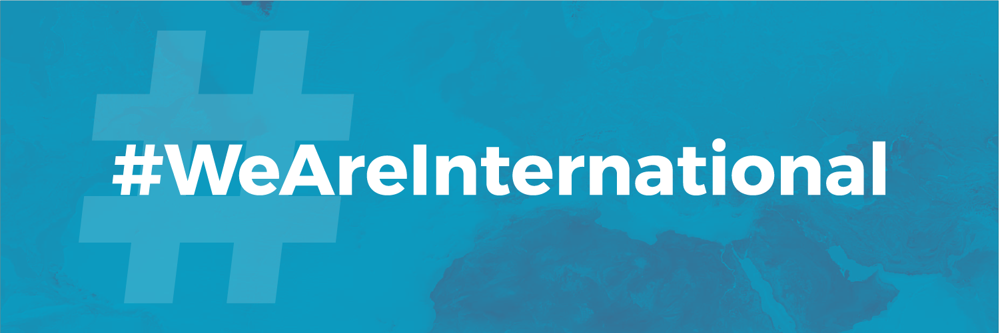

Brexit: information for prospective students
Bristol is a truly international university, with students from more than 150 countries across the world. In the EU referendum, 62 per cent of voters in Bristol voted in favour of remaining in the European Union. Despite leaving the EU, we continue to welcome staff and students from across Europe, and we maintain close connections with our European partners.
Undergraduate and postgraduate taught students
Students starting in 2021/22 onwards
EU students commencing their studies in the academic year 2021/22 or later will be charged overseas tuition fees.
A significant number of international scholarships are available to EU students for 2021/22 entry to help with the increase in tuition fees.
Find out more about tuition fees for undergraduate and postgraduate students.
Students starting in 2020/21 or earlier
EU students who started their studies in the academic year 2020/21 or earlier will continue to pay the same fees as home students for the duration of their course.
Existing rules around financial support and home fees will still apply.
If you have deferred your entry from 2020/21 to 2021/22, you will no longer be eligible for home fees and instead will be charged in line with overseas fees.
Research students
Subject to final agreement, we expect that the UK will participate in Horizon Europe, the new EU research and innovation investment programme for 2021-2027, as an associated country. We will publish more details here when they are available.
Erasmus+ and Study Abroad students
We will continue to welcome and support students through the current Erasmus+ programme until its end date in July 2022.
Students can also come to Bristol for a semester or a year through our Study Abroad programme or take part in our Summer Schools.
Please contact the incoming Global Opportunities team with any queries about studying at Bristol through Erasmus+ or Study Abroad.
Study abroad opportunities for Bristol students
See our current students page for information about going abroad as a Bristol student after Brexit.
Further reading
- Brexit and UK universities: Frequently asked questions and advice from Universities UK
- Brexit - fees and student support: information from UKCISA
Contact us
If you have any questions, please contact the Enquiries Team:
Undergraduate email queries: choosebristol-ug@bristol.ac.uk
Postgraduate email queries: choosebristol-pg@bristol.ac.uk
Visa advice
Advice on applying for a student visa for your time at Bristol.
 We Are International
We are proud to support the #WeAreInternational campaign. Watch the video.
International Office
The International Office at Bristol offers information, support and advice for international students coming to study with us, and welcome and orientation activities for new students.